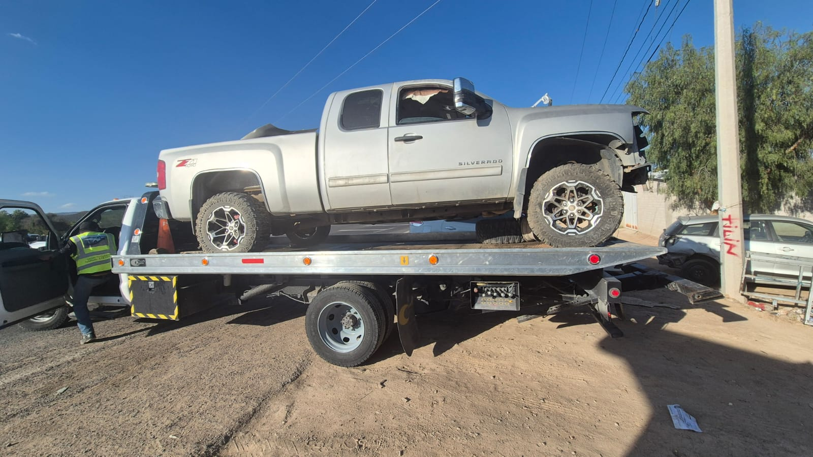

Yonke de confianza
Licos Autopartes
Autopartes nuevas y usadas, más kilómetros
para tu historia
Buenos preciosOpciones para tu presupuesto
Gran surtidoDistintas marcas y modelos
Variedad de marcasPregunta por disponibilidad
Reutiliza y ahorraSegunda vida para las piezas
Galería
Vehículos, proyectos y autopartes
Conoce algunas unidades, proyectos y vehículos que forman parte de Licos Autopartes.
Encuentra la pieza
Que necesitas
 Motores
Motores Transmisiones
Transmisiones Faros
Faros Puertas
Puertas Defensas
Defensas Suspensión y más
Suspensión y másSobre nosotros
Más que un yonke,
somos una solución
En Licos Autopartes nos dedicamos a la venta de autopartes nuevas y piezas usadas en buen estado, con opciones para distintas marcas y modelos. Te ayudamos a encontrar lo que necesitas con atención directa y personalizada.
Solicitar una piezaNuestra ubicación
Avenida Poniente #93Presa del GallineroC.P. 37800
HorariosLunes a Viernes
8:00 am a 6:00 pmSábado
8:00 am a 3:00 pmDomingo
Cerrado
8:00 am a 6:00 pmSábado
8:00 am a 3:00 pmDomingo
Cerrado
¿Buscas una pieza?
Cuéntanos qué necesitas
Envíanos la marca, modelo, año y la pieza que buscas. Al enviar el formulario abriremos WhatsApp con tu solicitud lista para enviarse al +52 418 187 5373.
♻Autos
reciclan
reciclan
🔧Piezas
circulan
circulan
◒El planeta
agradece
agradece
El pasado de los autos
también mueve el futuro